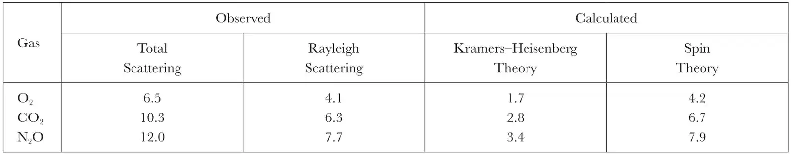

中文
中文C. V. Raman and S. Bhagavantam
Editor’s Note
Chandrasekhara Venkata Raman and S. Bhagavantam had recently presented experimental evidence suggesting that the photon carries one unit of intrinsic angular momentum. In subsequent weeks, great improvements in their technique led to much more accurate results, which they now report. Their experiments involved measuring the depolarisation of the light scattered in a fluid. By eliminated a source of error in the previous experiments, due to light scattered from the walls of the containing vessels, they were able to show that a theory based on photons carrying quantum-mechanical spin 1 accounted for the results far more accurately than an alternative theory for spinless photons. 中文
IN a paper under this title which has recently appeared,1 we have described and discussed observations which have led us to the conclusion that the light quantum possesses an intrinsic spin equal to one Bohr unit of angular momentum. In the four weeks which have elapsed since that paper was put into print, the experimental technique has been much improved in the direction of attaining greater precision. It appears desirable forthwith to report our newer results, which confirm the conclusion stated above. 中文
As mentioned in earlier communications,2 the experiment we set before ourselves was to determine the extent to which the depolarisation of Rayleigh scattering of monochromatic light is diminished when it is spectroscopically separated from the scattering of altered frequency arising from the molecular rotation in a fluid. An important improvement on our previous arrangements is the use of a pointolite mercury arc, which enables an intense beam of monochromatic light to be obtained which is rigorously transverse to the direction of observation. In the case of the feeble scattering by gases, a serious source of error is the parasitic illumination from the walls of the containing vessel. We have succeeded in eliminating this by using the gas under pressure in a steel cross with suitable arrangements for securing a dark background. The depolarisation of the scattered light is determined photographically with a spectrograph and a large nicol placed in front of the slit. The use of Schwarzchild’s formula for photographic blackening enables the ratio of the horizontal and vertical components of scattered light to be calculated from the times of exposure in the two positions of the nicol which give equal densities in the spectra. 中文
Using alternately a fine slit and a very broad slit on the spectrograph, the depolarisations of the Rayleigh scattering and of the total scattering respectively are determined. The following table gives the values for the case of oxygen, carbon dioxide, and nitrous oxide gases under pressure.
Table: Depolarisation percent

The depolarisations of the total scattering given in column 1 thus found spectroscopically are in good agreement with the best accepted values determined by other methods. Column 2 gives the observed depolarisations of the Rayleigh scattering, column 3 the values calculated from the Kramers–Heisenberg dispersion theory, and column 4 the values calculated from the theory of the spinning photons discussed in our paper. It will be seen that the values given by the latter are strikingly supported by the experimental results. 中文
(129, 22-23; 1932)
C. V. Raman and S. Bhagavantam: 210 Bowbazar Street, Calcutta, India, Nov. 29.
References:
1. Ind. Jour. Phy., 6, 353 (Oct. 1931).
2. Nature, 128, 576 and 727 (1931).